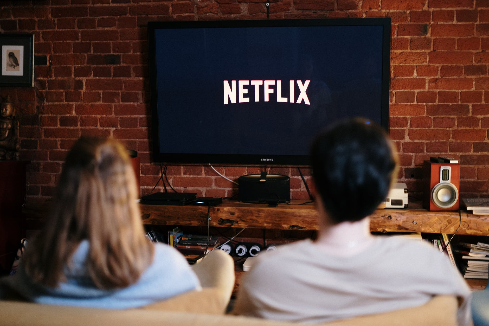

Pronto para assistir? Informe seu email para criar ou reiniciar sua
assinatura.
Aproveite na TV
Assista em Smart TVs, PlayStation, Xbox, Chromecast, Apple TV,
aparelhos de Blu-ray e outros dispositivos.

Baixe séries para assistir offline.
Salve seus títulos favoritos e sempre tenha algo para assistir.
Alguns esclarecimentos
Porquê criar a cópia do Netflix?
Para praticar, principalmente, o comportamento do display flex e os
posicionamentos de elementos na página. Além de usar um pouco de
JavaScript para dinamizar alguns elementos.
O que foi utilizado para criar este site?
Foi utilizado HTML, CSS e JavaScirpt. Também utilizei o jQuery para
gerar o carrossel na página de usuário logado para mostrar os filmes.